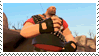

About. . .
Welcome to TFORT RING, a webring for fans of Team Fortress 2! Anyone
can join this webring, wether you're an avid player of the game, an enjoyer of the comics, or you
like to watch TF2 SFM animations.
Team Fortress 2 is a team-based multiplayer first-person shooter
developed by Valve and released on October 10th, 2007.
What is a webring?
A Webring is a collection of websites linked together, like a ring! The websites in the webring usually share some sort of theme, topic, or interest.

